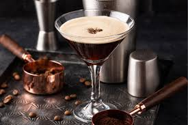

Espresso Martinis

If you're looking for a pick-me-up post-dinner, the Espresso Martini is here to jolt you awake with its boozy magical powers.
The cocktail has been jumpstarting outings and extending nights ever since making its debut in the 1980s.
Espresso martini ingredients
- 2 ounces vodka
- 1/2 ounce coffee liqueur (usually Kahlúa)
- 1 ounce espresso, freshly brewed (or cold brew concentrate)
- 1/2 ounce simple syrup
- Garnish: coffee beans
How to make an espresso martini
- Add vodka, coffee liqueur, espresso and simple syrup to a shaker filled with ice and shake until well-chilled.
- Strain into a chilled cocktail glass.
- Garnish with 3 coffee beans.
Return to home.